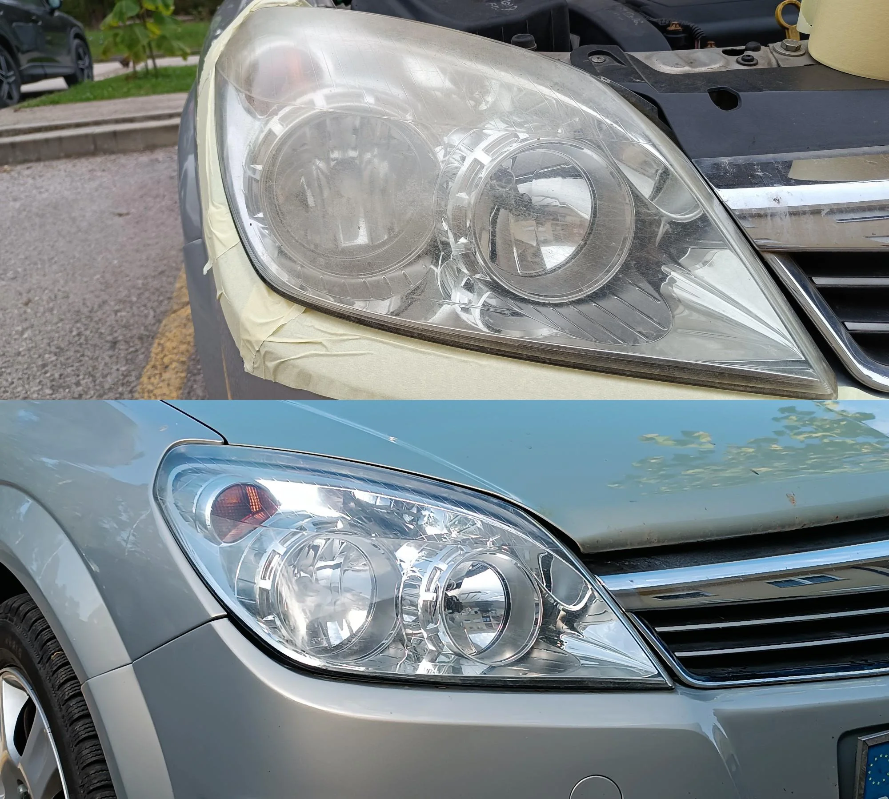
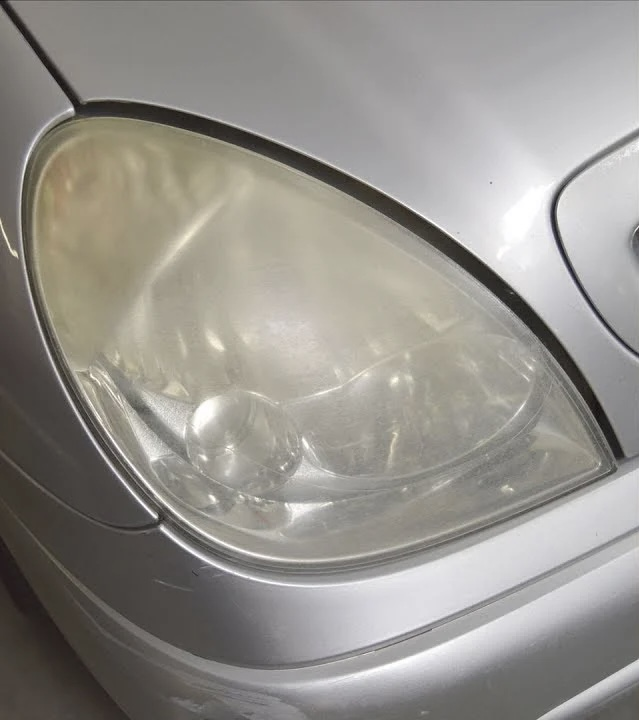
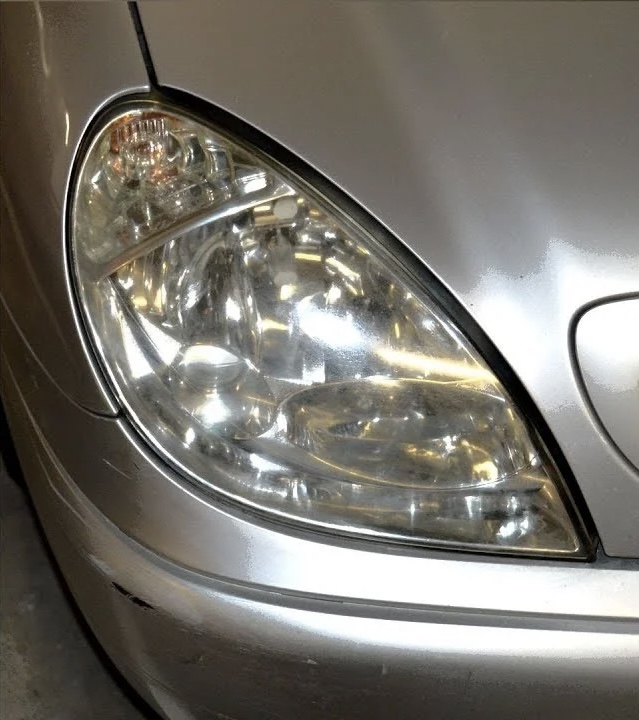
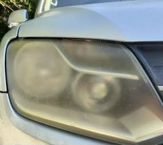
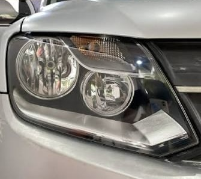
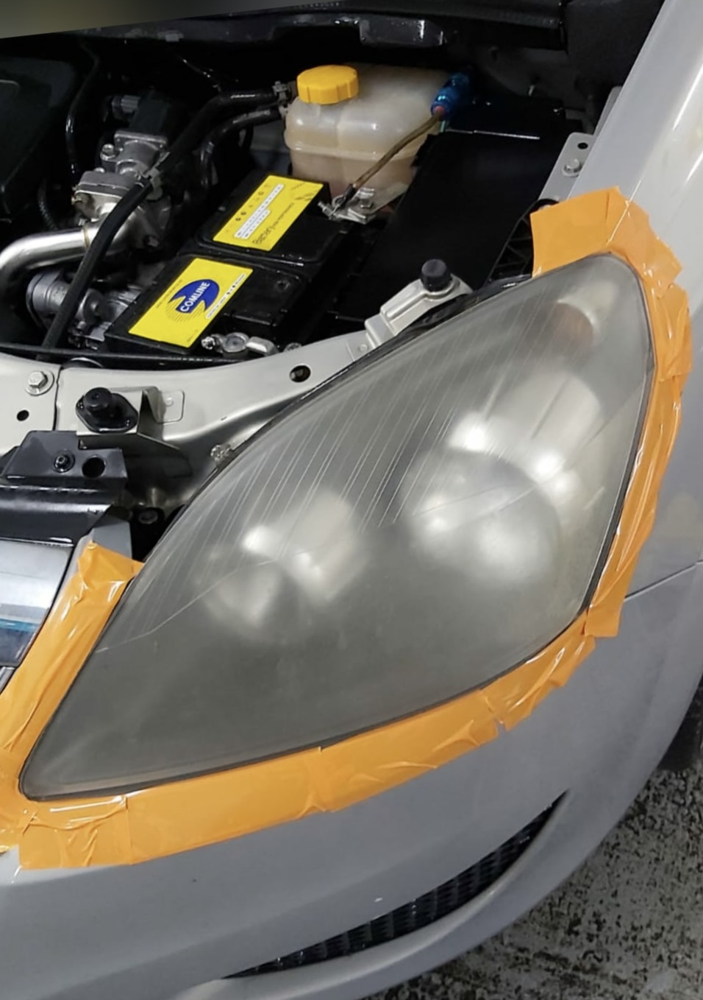
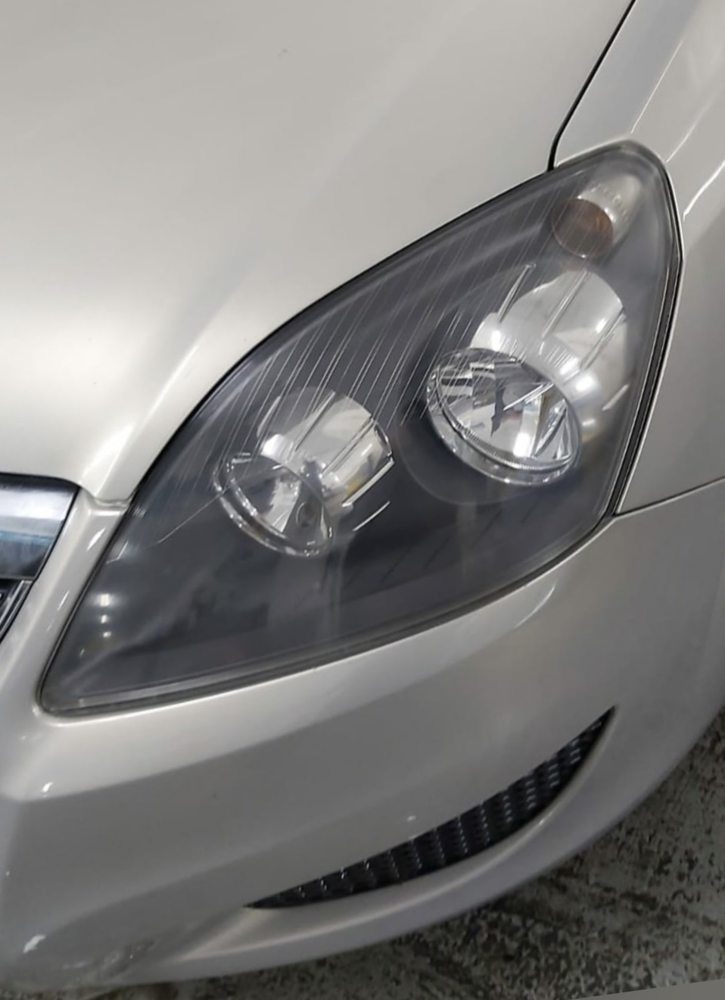

Pulido de faros
Eliminamos la capa amarilla y los microarañazos con pulido progresivo en varias fases.
Murcia y pedanías · Servicio a domicilio
Pulimos y restauramos los faros amarillentos de tu coche en menos de una hora. Volvemos a dejarlos transparentes y los protegemos con barniz UV para que no vuelvan a apagarse.

Resultado en 1 horaSin dejar el coche todo el día
Garantía 12 mesesProtección UV incluida
Sin desmontar el faroProceso seguro y limpio
Vamos a tu casaMurcia y pedanías
Servicios
Diagnóstico, pulido y protección. Sin chapuzas y sin piezas nuevas.
Eliminamos la capa amarilla y los microarañazos con pulido progresivo en varias fases.
Devolvemos la transparencia a faros muy castigados por el sol de Murcia, incluso con daño profundo.
Barniz o lámina protectora que evita que el faro vuelva a amarillear en 12 meses o más.
Nos desplazamos a tu casa o empresa en Murcia capital y pedanías. Tú no mueves el coche.
Antes y después
Arrastra el control de cada foto para comparar.






Cómo funciona
Mándame una foto de tus faros por WhatsApp y te digo el precio exacto en minutos.
En el taller o en tu domicilio, en el horario que mejor te venga.
En una hora te vas con los faros transparentes y protegidos. Garantía por escrito.
Precios
Precio cerrado antes de empezar. IVA incluido.
[35 €]
[60 €]
[80 €]
Opiniones
Tenía los faros amarillos y no veía nada de noche. En una hora parecían nuevos. Trato de diez.
Vino a mi casa en Alcantarilla y me lo dejó impecable. Me libró de cambiar los faros, que valían un dineral.
Pasé la ITV sin problemas después de pulirlos. Rápido, limpio y con garantía por escrito.
Preguntas frecuentes
Entre 45 minutos y 1 hora para la pareja de faros. Si el daño es muy profundo puede llevar algo más, pero te lo aviso antes de empezar.
Sí. Al recuperar la transparencia del policarbonato la luz se proyecta mucho más lejos y con más intensidad. La mayoría de clientes lo nota la primera noche.
En la mayoría de casos sí, porque el problema suele ser la falta de luz o la difusión. Si el faro está roto o tiene una grieta interna, te lo digo claro y no te cobro el trabajo.
Con la protección UV incluida, entre 1 y 2 años según el uso y si el coche duerme en la calle. Sin protección, el sol de Murcia los vuelve a amarillear en meses.
Sí, en Murcia capital y pedanías. Se suman [X €] de desplazamiento según la distancia. Consúltame tu zona por WhatsApp.
12 meses por escrito en el pulido y la protección. Si el faro vuelve a amarillear en ese plazo dentro de un uso normal, lo repaso sin coste.
Contacto
Mándame una foto de tus faros y te digo el precio exacto. Sin compromiso.